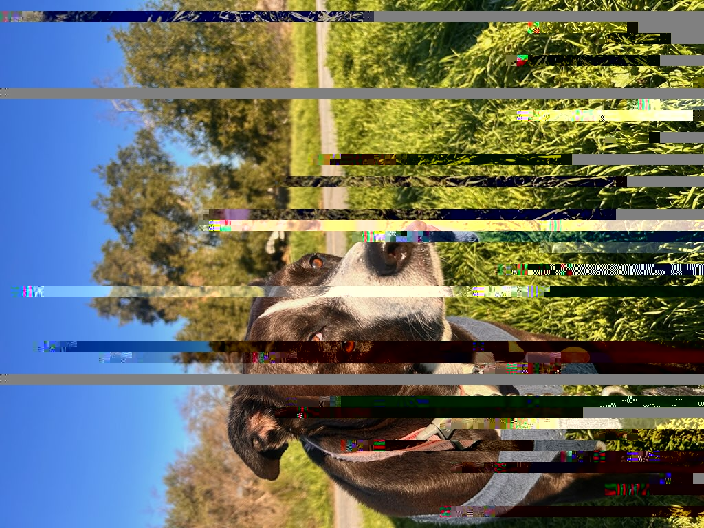
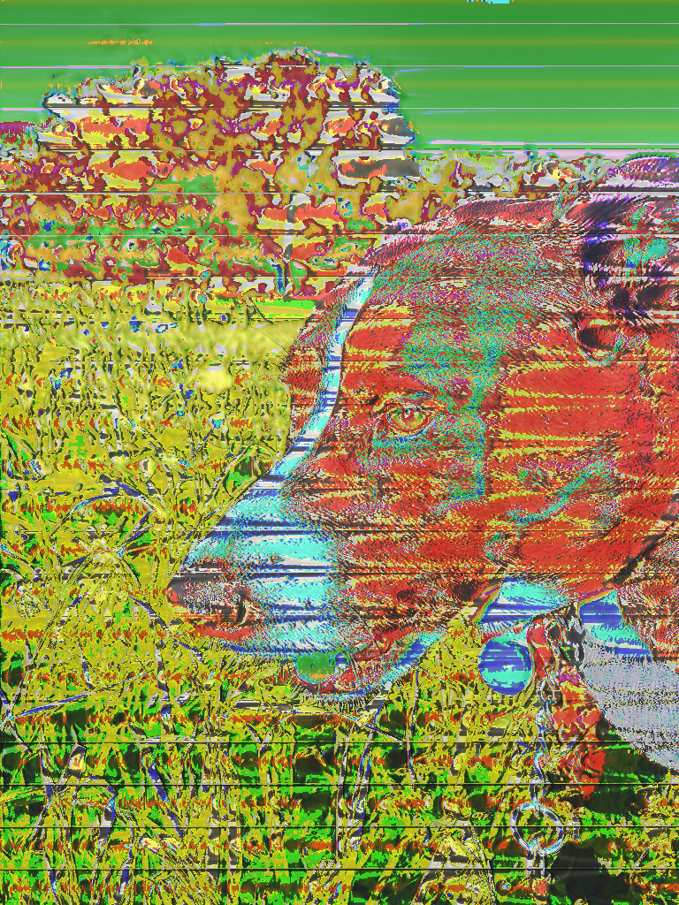

Glitch Series
This project series was created using data bending and data moshing with Photoshop and Audacity. I glitched images of my dog to represent how memories can change and fade over time. Even though memories can feel permanent, they can become distorted or incomplete, similar to the glitches in my project.
home
